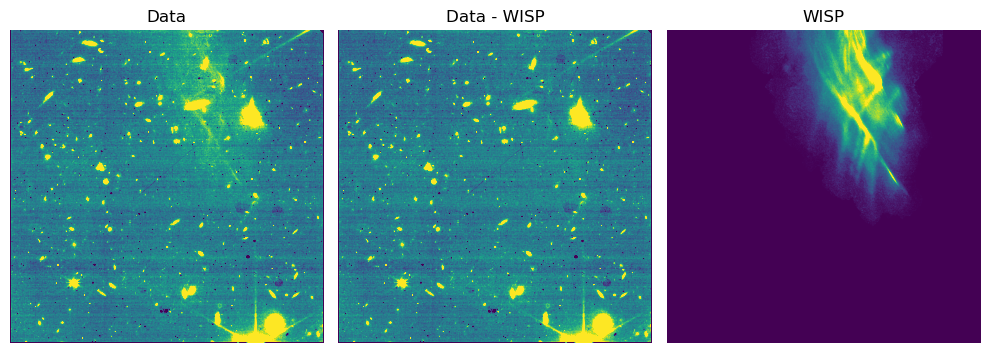
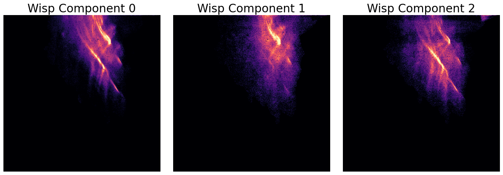
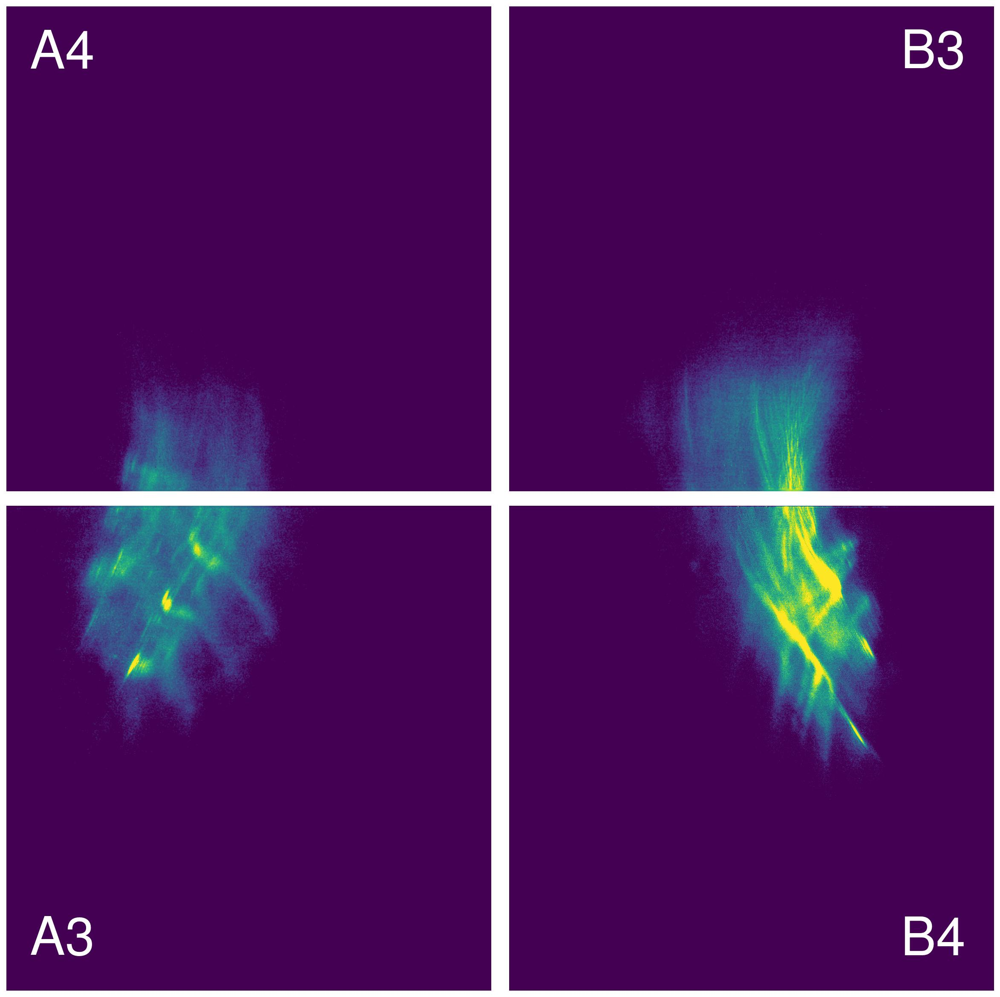
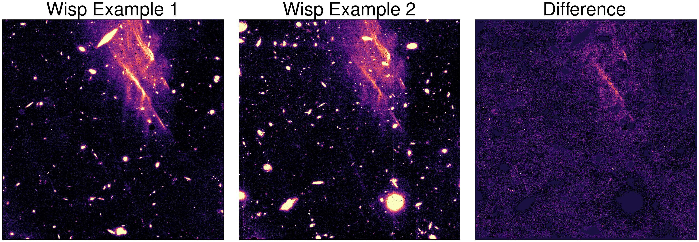

NMFwisp
NMFwisp subtracts wisp artifacts from JWST/NIRCam images using multi-component, detector- and filter-specific templates built with the non-negative matrix factorization (NMF) algorithm. This is the standard wisp-subtraction method adopted in the JWST Advanced Deep Extragalactic Survey (JADES) Data Release 5 reduction pipeline and is described in the JADES data release paper: arXiv:2601.15958.
Compared with conventional single-template corrections, the multi-component template framework captures wisp morphological variation more effectively, reducing residual artifacts and improving photometry in wisp-affected regions.
Overview
Wisps are scattered-light artifacts that appear in JWST/NIRCam short-wavelength images. NMFwisp models this structure with a compact template basis and returns both the best-fit wisp model and its uncertainty.
Because wisps exhibit significant morphological variation (see examples here), traditional subtraction methods based on a single template can leave residuals, especially when the wisp morphology differs substantially from the reference template. The NMF method captures this variation using a multi-component wisp basis.
NMFwisp is designed for simple implementation. In most cases, users only need to call fit_wisp. Wisp templates are downloaded automatically with the package, which are learned from the deep, extensive JADES data. The wisp subtraction should be applied in the Stage 2 JWST calibration before 1/f correction.
For questions about the code, please contact Zihao Wu (zihao.wu@cfa.harvard.edu).
Installation
Install the released package from PyPI:
pip install nmfwispFor a development install from source:
git clone https://github.com/zihaowu-astro/NMFwisp.git
cd NMFwisp
pip install -e .NMFwisp requires NumPy, Astropy, and SciPy.
Quickstart
The following example loads a NIRCam exposure, estimates the wisp model, and subtracts it from the science image.
from astropy.io import fits
import matplotlib.pyplot as plt
import numpy as np
from nmfwisp import fit_wisp
filter_name = "F150W"
detector_name = "nrcb4"
filename = "./data/jw01286001001_07201_00003_nrcb4_rate.fits"
maskfile = "./data/jw01286001001_07201_00003_nrcb4_cal_bkgsub_tweak_smask-full.fits"
data = fits.open(filename)["SCI"].data
err = fits.open(filename)["ERR"].data
mask = fits.open(maskfile)[0].data.astype(bool)
wisp, wisp_e = fit_wisp(
data,
err,
mask,
detector_name=detector_name,
filter_name=filter_name,
correct_1f=False,
)
corrected = data - wisp
API Reference
fit_wisp
fit_wisp(data, err, mask, wisp_path=None,
detector_name=None, filter_name=None, correct_1f=False)Estimate the wisp model and its uncertainty for one exposure or a stack of exposures.
wisp_path- Optional path to a custom template directory. If omitted, the bundled package templates are used, which is optimized using the JADES data.
detector_name-
Required detector name, for example
"nrcb4". filter_name-
Required filter name, for example
"F150W". correct_1f-
If
True, fit the wisp model with iterative 1/f correction.
Returns wisp, wisp_e.
NMF Components
The NMF template library represents wisps as a combination of multiple components. These components capture the main variations while keeping the fit constrained to recurring detector features.

Templates
Bundled templates are available for the detector/filter combinations
distributed in nmfwisp/templates. The package checks
the following detectors and filters.
| Category | Values |
|---|---|
| NIRCam detectors | nrca3, nrca4, nrcb3, nrcb4 |
| NIRCam filters | F090W, F115W, F150W, F200W, F162M, F182M, F210M |
| Wisp-free cases | F070W, nrca1, nrca2, nrcb1, nrcb2 |

Advanced Usage
Custom template path
We recommend using the default wisp templates bundled with the
package. If you want to use wisp templates built from your own data,
set wisp_path to the custom template directory as shown
below. The custom directory should follow the same detector/filter
layout as the bundled templates. Code for building NMF wisp
templates is documented on the
Developer API page.
wisp, wisp_e = fit_wisp(
data,
err,
mask,
wisp_path="/path/to/templates",
detector_name="nrcb4",
filter_name="F150W",
)Iterative 1/f correction
Set correct_1f=True to fit the wisps and 1/f noise simultaneously. We recommend enabling this option because residual 1/f noise can bias the wisp fit. A prior 1/f correction is often imperfect due to wisp contamination, so the iterative correction can further reduce 1/f residuals and improve the inferred wisp flux.
We use a fast, median-based 1/f correction algorithm. The correction is applied only internally during the wisp fit; it improves the wisp-flux inference but does not directly subtract 1/f noise from the data. We recommend applying additoinal 1/f correction using more advanced methods after subtracting wisps.
wisp, wisp_e = fit_wisp(
data,
err,
mask,
detector_name="nrcb4",
filter_name="F150W",
correct_1f=True,
)Wisp Morphology Variation
Wisp morphology is not perfectly fixed between observations. A traditional single-template subtraction cannot adapt to these shape changes, so it can leave residual wisp structure or subtract the artifact imperfectly.

Citation
If you use NMFwisp, please cite the associated paper. The paper PDF is available at arXiv:2601.15958.
@ARTICLE{2026arXiv260115958W,
author = {{Wu}, Zihao and {Johnson}, Benjamin D. and {Eisenstein}, Daniel J. and {Cargile}, Phillip and {Hainline}, Kevin and {Hausen}, Ryan and {Rinaldi}, Pierluigi and {Robertson}, Brant E. and {Tacchella}, Sandro and {Williams}, Christina C. and {Willmer}, Christopher N.~A.},
title = "{JWST Advanced Deep Extragalactic Survey (JADES) Data Release 5: Wisp Subtraction with the Non-negative Matrix Factorization Algorithm}",
journal = {arXiv e-prints},
keywords = {Instrumentation and Methods for Astrophysics, Astrophysics of Galaxies},
year = 2026,
month = jan,
eid = {arXiv:2601.15958},
pages = {arXiv:2601.15958},
doi = {10.48550/arXiv.2601.15958},
archivePrefix = {arXiv},
eprint = {2601.15958},
primaryClass = {astro-ph.IM},
adsurl = {https://ui.adsabs.harvard.edu/abs/2026arXiv260115958W},
adsnote = {Provided by the SAO/NASA Astrophysics Data System}
}